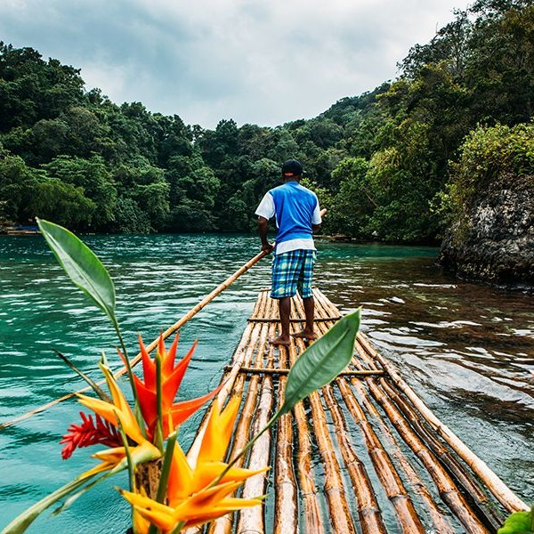
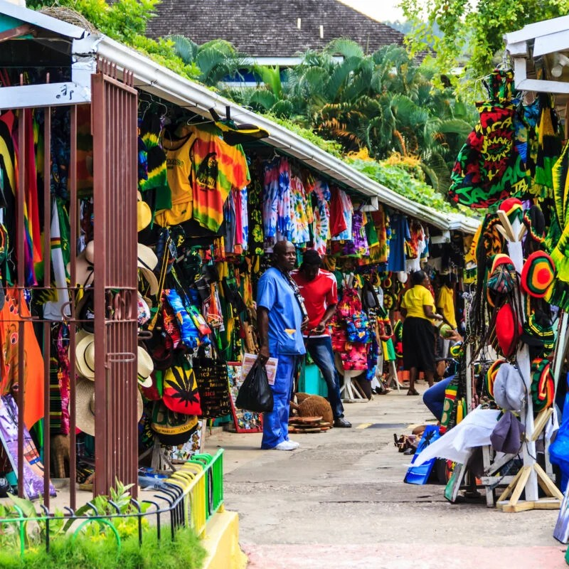

Jamaica
From Reggae Rhythms to Lush Landscapes, Exploring the Magic of Jamaica
My Jamaican journey begins in Kingston, the lively capital city. Wandering through the vibrant streets of Kingston, I could feel the rhythm of reggae music in the air. A visit to the Bob Marley Museum was a pilgrimage for any music lover, allowing me to delve into the life of the legendary reggae icon. Sampling the delectable jerk chicken from a local food stall was a culinary highlight that left my taste buds dancing.
 From Kingston, I headed into the Blue Mountains, where lush coffee plantations carpeted the slopes. The Blue Mountain Peak Trail offered an exhilarating hike, leading me through dense rainforests and misty landscapes. Reaching the summit at sunrise, I was treated to panoramic views of Jamaica bathed in the soft, golden light. Sipping on a cup of freshly brewed Blue Mountain coffee at a local farm was the perfect reward.
Continuing my journey, I made my way to the western coast and the famous town of Negril. Seven Mile Beach, with its powdery white sands and crystal-clear waters, was a slice of paradise. I spent lazy days sunbathing and snorkeling among colorful coral reefs. Negril is renowned for its stunning sunsets, and watching the sky burst into fiery hues from Rick's Café was a magical experience.
Next on my list was Montego Bay, known for its upscale resorts and golf courses. I decided to indulge in a bit of luxury and stayed at an all-inclusive beachfront resort. Days were filled with water sports, spa treatments, and gourmet dining. Exploring the historic Rose Hall Great House and its tales of haunted pasts added a touch of mystery to my stay.
 Heading east, I arrived in Ocho Rios, a town famous for its lush landscapes and natural wonders. A visit to Dunn's River Falls was a highlight—an exhilarating experience as I climbed the terraced cascades with a group of fellow adventurers. The vibrant greenery of Fern Gully, a winding road lined with fern-covered cliffs, was a delightful drive.
My journey took me to the unspoiled beauty of Port Antonio on Jamaica's east coast. Exploring Reach Falls, I swam in crystalline pools and climbed through a series of cascades, feeling like a true explorer. The stunning Blue Lagoon, surrounded by lush vegetation, was a tranquil spot for a relaxing boat ride. And of course, I couldn't resist sampling more jerk chicken from a local roadside stand.
Before concluding my Jamaican adventure, I delved into the history of Jamaican rum production with a visit to Nassau Valley. Touring Appleton Estate, one of the island's oldest distilleries, I learned about the art of crafting fine Jamaican rum. Tastings of aged rums and classic cocktails were a fitting end to my journey.
As I bid farewell to Jamaica, I carried with me the vibrant rhythms of reggae, the warm hospitality of the locals, and countless memories of the island's natural beauty. Jamaica's irresistible charm had left an indelible mark on my soul, and I couldn't wait to share the magic of this Caribbean paradise with my readers.
I hope this journey through Jamaica has transported you to the land of reggae, jerk seasoning, and endless sunshine. Stay tuned for more adventures as I continue to explore the captivating Americas. Until then, One Love, and may your travels be filled with the spirit of Jamaica!